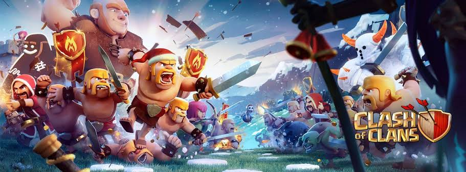
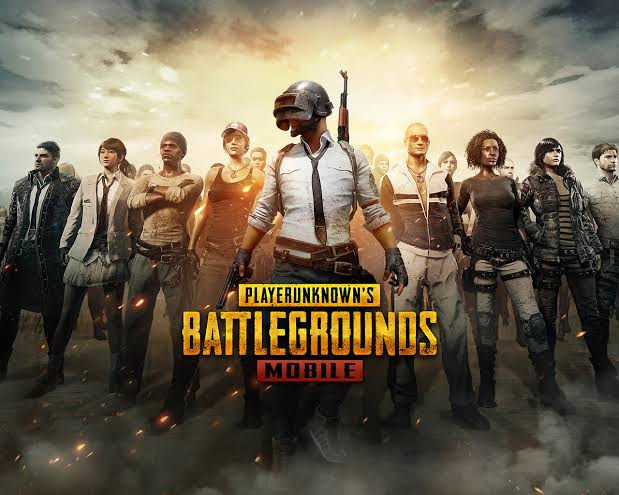
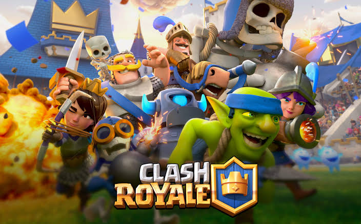
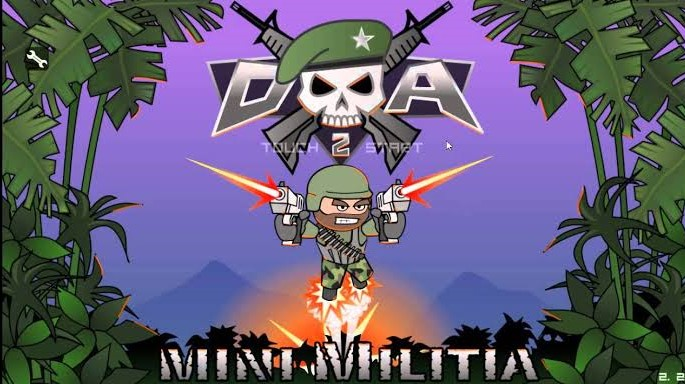
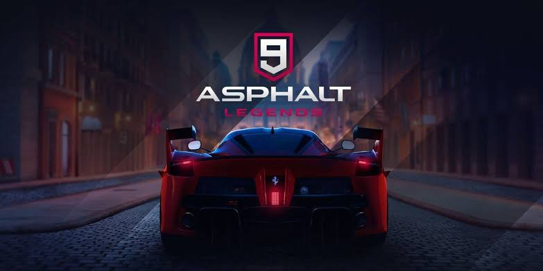

ANDRIOD GAMES
CLASH OF CLANS

clash of clans is online mulptiplayer game in which players form communities
called clans,train troops,and attack other players to earn resources.There
are four resources in the game.Gold and elixier can be used to build and upgrade
defenses and traps that protect the player from other palyers attacks and to build
and upgrade buildings.Elixir and dark elixer also used to train and upgrade troops and speels
.Gems are the premium currency.Attacks are rated on a three scale and have maximum timed length of three minutes.
to earn and store gold and elixir,palyer must build gold mines and gold storages,respectively.elixir is used to train
new trrops,and to build and upgrade troops,and to build and upgrade certain buildings and to upgrade townhall.
clans are group of players who join together to support each other,either materially or verbally.Players can join clans once they rebuild the special
castle building early on.the major componet of the gameplay of Clash of Clans is clans facing off agains one other in the clan wars
clan leader and co-leader can begin wars against other clans.Each clan is givenPreaparation day
and one war day.
When player
attacks a member of the opposing clan they recive star based upon the amount of destruction they cause to the opponet base 50% damage,destroying
townhall also give 1 star and destorying the entrie base give remaing third star.
Clans of Clans Minimum System requirements
operating system:Andriod 4.2.2/iOS 9.0.
Processor:N/A.
Video card:N/A.
RAM Free:1 GB RAM.
Disk space:220 MB Free.
PUBG

Playerunkown Battleground(PUBG)is an online multiplayer battle royale game.battleground is a player versus palyer shooter game
in which up to one hundered palyers fight in a battle royle,a type of large-scale last man standing deatchmatch where players
fight to remain the last alive.Players can choose to enter the match solo,duo or with a small team of up to four people.The last person
or team alive wins the match.Each match starts with palyer parachuting from a palne onto one of the four maps.The plane flight path across the map varies with each around,requiring palyers o quickly determine the best time to ejiect and parachute to the ground.once they land the player can search buildings
to find weapons,vehicle,armor and equipment.
Every few minutes,the playable area of the map begin to shrink down towards a random location,with any palyer caught outside the safe area
taking damage incrementally and eventually being eliminated if the safe zone is not entered in time;in game,the players see the boundary being
eliminated if the safe one is not entered in time.A plane will fly over various parts of the playable'
map occasionally at random,or wherever a palyer uses a flare gun,and drop a loot package,containing item which are typically unobtainable
during normal gameplay.At the completion of each round,palyers gain in game currency based on performances.The currencyis used to purchase crates which contain cosmetics items for character or weapons customization.
PUBG Minimum System requirements
.
Andriod version:5.1.1 and above.
Ram:2 GB.
Storage:2 GB
Processor:snapdragon 425.
CLASH ROYAL

Clash Royale is a tower rush video game which pits players in games featuring two or four players (1v1 or 2v2) in which the objective is to destroy the most opposing towers, with the destruction of the "King's Tower" being an instantaneous win.After three minutes, if both of the players/teams have an equal amount of crowns or none at all the match continues into a 2-minute overtime period and the player who destroys an opposing tower wins instantaneously. If no towers are destroyed during overtime, there is a tiebreaker, where all towers rapidly lose health, and the tower with the least health is destroyed. If two towers have the same health, there is a draw.After an update in late 2018, leaving a 2v2 match multiple times prevents the player from playing 2v2 with random players for some time.
In Clash Royale, players are ranked by their number of trophies. Players level up by gaining Experience (or King Level) points through donating and upgrading cards. The highest possible level is level 13. The December 2018 Update added Star Points for excessive Experience when players reach level 13, and will award Star Points for previously leftover Experience.There are thirteen playing arenas in total (excluding the tutorial arena, Training Camp): Goblin Stadium, Bone Pit, Barbarian Bowl, P.E.K.K.A's Playhouse, Spell Valley, Builder's Workshop, Royal Arena, Frozen Peak, Jungle Arena, Hog Mountain, Electro Valley, Spooky Town, and The thirteenth arena (this arena name changes every season), with each arena corresponding to a certain trophy range. A player reaches leagues after reaching 4000 Trophies.
Minimum clash royal requirements
Operational System: Android 4.1 / iOS 9.0.
Processor: N / A.
Video Card: N / A.
RAM Free: 1 GB RAM.
Disk Space (HD): 160 MB Free.
Directx Version: N / A.
MINI MILTIA

is a free-to-play 2D shooter game released for iOS and Android devices. In this game mode, the player gets training at Officer Candidate school by a trainer named Sarge. Sarge teaches the basics of movements, control and weapon usage with some targets and the use of robots.In Survival mode, Sarge, the trainer brings the player into the battlefield where the player must defend themselves against weaponized robots with the help of Sarge.
The multiplayer mode features both Internet and Wi-Fi cross-platform connectivity. Wi-Fi multiplayer can either be on a local area network (LAN), which supports 12 players, or online, which supports 6 players in each server. The gameplay is similar to survival, however, it includes a wider variety of weapons, maps, and gamemodes such as Team Deathmatch or Capture the Flag. Additional weapons and avatars can be obtained through microtransactions.
Minimum Mini Miltia requirements
Operational System: 4.1 and iOS 6.0 or later.
Processor: N / A.
Video Card: N / A.
LIMBO

The player controls the boy throughout the game. As is typical of most two-dimensional platform games, the boy can run left or right, jump, climb onto short ledges or up and down ladders and ropes, and push or pull objects. Limbo is presented through dark, greyscale graphics and with minimalist ambient sounds, creating an eerie, haunting environment.The dark visuals also serve to conceal numerous lethal surprises, including such environmental and physical hazards as deadly bear traps on the forest floor, or lethal monsters hiding in the shadows. Among the hazards are glowing worms, which attach themselves to the boy's head and force him to travel in only one direction until they are killed.
The game's second half features mechanical puzzles and traps using machinery, electromagnets, and gravity. Many of these traps are not apparent until triggered, often killing the boy. The player is able to restart at the last encountered checkpoint, with no limits placed on how many times this can occur. Some traps can be avoided and used later in the game; one bear trap is used to clamp onto an animal's carcass, hung from the end of a rope, tearing the carcass off the rope and allowing the branch and rope to retract upwards and allow the boy to climb onto a ledge otherwise out of reach. As the player will likely encounter numerous deaths before they solve each puzzle and complete the game, the developers call Limbo a "trial and death" game.
Minimum Limbo requirements
Operational System: Android – 4.4 and up.
Processor: N / A.
Video Card: N / A.
ASPHALT LEGENDS 9

Asphalt 9: Legends is a racing video game.There were 48 cars featured in the game when soft-launched, but the worldwide release saw the introduction of four new cars, leading to 52 cars.
There are currently 118 cars as of December 2020. Like its predecessor, each of the cars belongs to a class progressively featuring higher performance and rarity: D, C, B, A, and S. The player starts with a car in the lowest class (Class D), the Mitsubishi Lancer Evolution X. All cars in the game now require "blueprints" to unlock and then subsequently "star up", with each of them having anywhere from 3 to 6 stars. For each new star, the car's performance capability is increased (at the cost of a lesser fuel tank quantity). Each car can also be customized with the new car editor feature.
There are 3 race types in Asphalt 9. The "classic" race mode from previous games has returned alongside new races, "Time Attack" and "Hunted." In Time Attack, the player has to cross the finish line within a time limit. In Hunted, the player must escape a police pursuit in a car chase without getting busted or running out of time. The player must also avoid wrecking their car, for if they do, they are immediately "busted".
The game features a number of race tracks set in new locations: Cairo, the Himalayas, the U.S. Midwest, Scotland, and Caribbean. It also brings back five locations from previous games in the series: San Francisco, Rome, New York City, Shanghai, Nevada and Osaka.
Minimum Asphalt Legends 9 requirements
operating system:Android 4.3.
Processor:N/A.
Video card:N/A.
RAM Free:2 GB RAM.
SHADOW FIGHT 3

Shadow Fight was a Facebook-based fighting game.Shadow Fight 3 does not utilize silhouettes to represent fighters. Instead, they are rendered as life-like three-dimensional characters in a richly animated environment. Players build up a gauge during combat, allowing to temporarily enter 'Shadow Form'. This allows them to use shadow abilities, shadow abilities are based on what armour you use, what weapons and what faction you are in. Rare weapons and armour all share the same shadow ability in each chapter, but legendary and epic weapons have unique shadow abilities
The game takes place years after the events of Shadow Fight 2. Three factions exist; the player starts the game in Legion, which uses mostly European weapons like swords and hammers and has slow but powerful attacks. Later they escape to Dynasty, which has a faster, more acrobatic fighting style and uses weapons from around Asia like nunchaku and guandao. The final main faction is Heralds, who have more precise attacks and mostly Japanese weaponry like naginata and katana.
Minimum Shadow Fight requirements
operating system: Android 5.0 and above.
Video card:N/A.
RAM:more than 3GB
BEACH BUGGY 2

Beach Buggy Racing is a fully 3D off-road kart racing game with amazing physics, detailed cars and characters, and spectacular weapons, powered by Vector Engine and NVIDIA's PhysX. It's like a console game in the palm of your hand!With over 45 Powerups to discover and upgrade, BBR2 adds a layer of strategic depth to the classic kart racing formula. Create your own custom Powerup deck with out-of-this-world abilities like "Chain Lightning", "Donut Tires", "Boost Juice" and "Killer Bees".
Collect a garage full of beach buggies, monster trucks, muscle cars, classic pickups and formula supercars. All the Beach Buggy classic cars return -- plus dozens of new cars to discover!Win exotic metallic, rainbow and matte paints. Collect decal sets with tiger stripes, polka dots, and skulls. Customize your car exactly the way you like.Edge-of-your-seat racing with 6 drivers. Daily drift and obstacle course challenges. One on one driver races. Weekly tournaments. Car challenges. So many ways to play!
Minimum Beach Buggy 2 requirements
operating system:Andriod 4.4 or higher required.
Video card:N/A.
RAM:2 GB.
MINECRAFT

Minecraft is a 3D sandbox game that has no specific goals to accomplish, allowing players a large amount of freedom in choosing how to play the game.However, there is an achievement system,known as "advancements" in the Java Edition of the game.Gameplay is in the first-person perspective by default, but players have the option for third-person perspective.The game world is composed of rough 3D objects—mainly cubes and fluids, and commonly called "blocks"—representing various materials, such as dirt, stone, ores, tree trunks, water, and lava. The core gameplay revolves around picking up and placing these objects. These blocks are arranged in a 3D grid, while players can move freely around the world. Players can "mine" blocks and then place them elsewhere, enabling them to build things.Many commentators have described the game's physics system as unrealistic.
Minecraft has two alternative dimensions besides the overworld (the main world): the Nether and the End.The Nether is a hell-like dimension accessed via player-built portals; it contains many unique resources and can be used to travel great distances in the overworld, due to every block traveled in the Nether being equivalent to 8 blocks traveled in the overworld.The player can build an optional boss mob called the Wither out of materials found in the Nether.The End is a barren land consisting of many islands. A boss dragon called the Ender Dragon dwells on the main island.Killing the dragon opens access to an exit portal, which upon entering cues the game's ending credits and a poem written by Irish novelist Julian Gough.Players are then teleported back to their spawn point and may continue the game indefinitely.
Minimum Mini Craft requirements
operating system:Andriod 4.2.
Video card:N/A.
RAM:1 GB.
AMONG US

Among Us is a multiplayer game for four to ten players. One to three players (depending on what the host selected) are chosen to be the impostor(s) each round. A game can take place on one of three maps: a spaceship called "The Skeld", a headquarters building called "MIRA HQ", or a planet base called "Polus".
At the start of the game, Crewmates are given "tasks" to complete around the map in the form of minigames, consisting of maintenance work on vital systems such as electrical rewiring and engine refueling. Impostors are given a fake list of tasks to blend in with Crewmates, although they are unable to actually complete any task. Impostors can sabotage vital systems, covertly travel through air vents, and work with other Impostors to kill Crewmates.
ny living player may call a group meeting by reporting a dead body, or by pressing a button in the map at any time (except when a sabotage is in progress).This halts all other gameplay. In the meeting, players discuss who they believe is an Impostor based on the available evidence.A plurality vote is held, and the chosen player is ejected from the map and dies.Players can communicate in a text chat,but only during meetings, and only if they are alive (though ghosts can speak with one another at any time).While the game does not have a built-in voice chat system, it is common for players to use external programs such as Discord while playing.
In each game's lobby, various options can be adjusted to customize aspects of gameplay, such as the vision range of the Crewmates and the Impostors, and the allowed number of emergency meetings.There are also many cosmetic options, including spacesuit colors, skins, hats, and pets,some of which are paid downloadable content.
Minimum Among Us requirements
operating system:Andriod 4.4 or later iOS 10.0.
Video card:N/A.
RAM:1 GB.